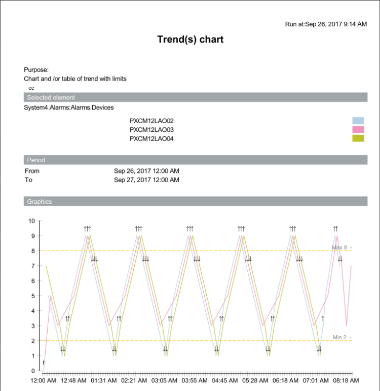
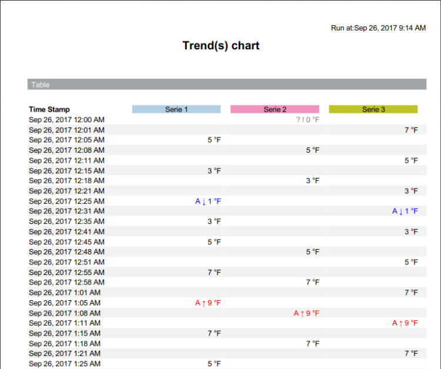

Trend Chart Report
Trend Chart Report
This report is designed to display a chart or table of trend data for multiple devices over a specified range of time.
NOTE: While running a Trend chart report, you might receive an exception error if there are more trend series in the report than entries in the associated text group. You can correct this problem by customizing the Pharma List Series text group and then adding new rows with colors to match the number of trend series in the report.
For information on customizing the text group, see the following topic:
Engineering Step-by-Step > Other Applications > Advanced Reports for Pharma > Additional Advanced Reports for Pharma Procedures > Customize the Pharma List Series Text Group
For information on adding rows to the text group once it has been customized, see the following topic:
Engineering Step-by-Step > Other Applications > Text Group Editor > Adding a Row to a Text Group
Sample report


Legend
Indicator | Description for Table | Description for Graphic |
! | Bad value | Bad value |
Arrow Up – Red | Over high limit | Pass high limit or return from low limit |
Arrow Down – Blue | Below low limit | Return from or pass low limit |
Pencil | Manual correction | Manual correction |
? | Fault | Not applicable |
A | Alarm | Not applicable |
OfS | Out of Service | Not applicable |